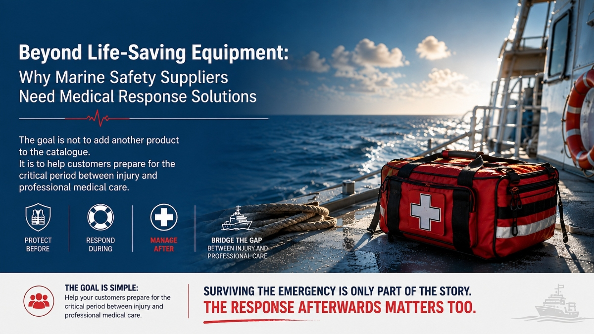

Beyond Life-Saving Equipment: Why Marine Safety Suppliers Need Medical Response Solutions
AUG 13, 2026

Marine safety has always focused on one mission: protecting lives when things go wrong.
Life jackets, survival equipment, rescue products and emergency communication systems all play an essential role.
But there is another question:
What happens after someone is injured?
A serious injury at sea may involve severe bleeding, burns or trauma. Unlike a typical workplace, professional medical support may not always be immediately available.
A vessel may be hours away from shore. Offshore evacuation may take time. During that gap, the people onboard may need to manage the situation themselves.
This is where medical response becomes a natural part of the wider safety system.
For marine safety suppliers, adding medical response solutions does not necessarily mean entering a completely new market. Their customers already buy products designed to protect people before and during an emergency.
Medical preparedness simply addresses what happens next.
The goal is not to add another product to the catalogue.
It is to help customers prepare for the critical period between injury and professional medical care.
Because surviving the emergency is only part of the story.
The response afterwards matters too.